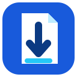

Before capturing
Pin PageSweep from Chrome's extensions menu, then avoid switching tabs or interacting with the page until the capture finishes.

Welcome to PageSweep
Select the PageSweep toolbar icon once. Keep the tab visible while PageSweep scrolls, captures, and prepares one PNG.
Pin PageSweep from Chrome's extensions menu, then avoid switching tabs or interacting with the page until the capture finishes.
PageSweep uses Chrome's normal download system. Files go to Chrome's configured download location—usually your Downloads folder.
If Chrome is set to ask where to save each file, Chrome will show that prompt.
chrome:// pages cannot be captured.PageSweep processes screenshots locally in Chrome and does not send captured webpage content to an external server.
You can reopen this guide later from PageSweep's extension options.